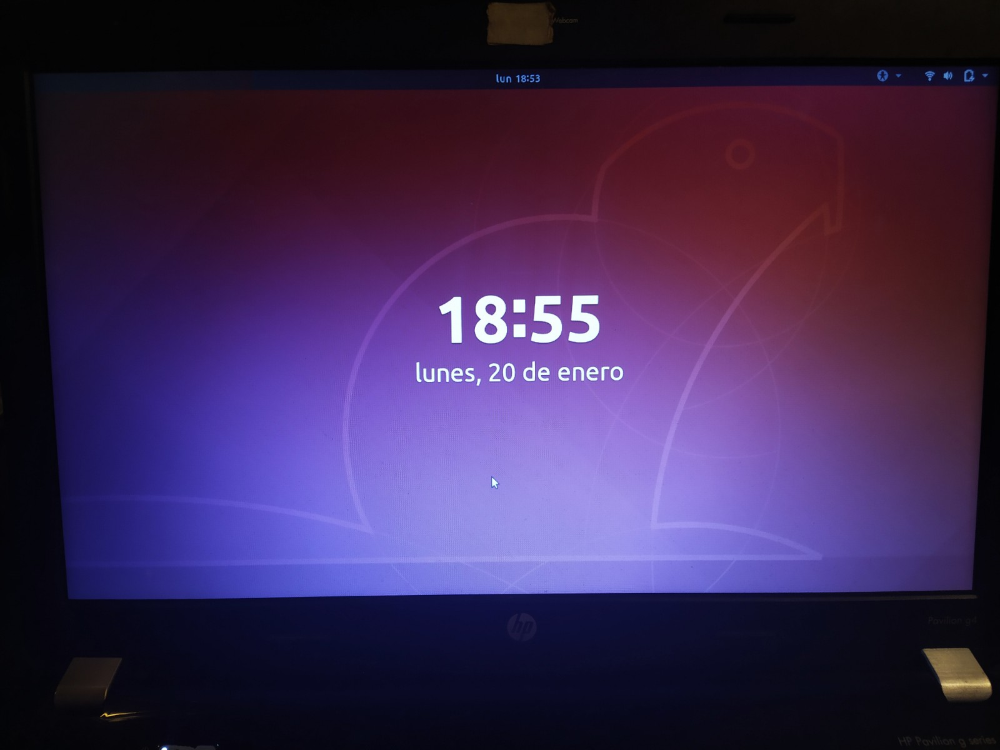

Instrucciones
- Instalar Windows y Linux Desktop nativo.
- Describir las caracteristicas mas sobresalientes de cada SO.
Requerimientos
- Computadora objetivo.
- Computadora secundaria para generar dispositivos booteables.
- USB Stick de por lo menos 6GB.
- Conexion a internet.
- Herramienta para creacion de USB's booteables (en esta ocasion utilizaremos Rufus, pero puedes utilizar el de tu preferencia.
- Imagenes (ISO) de ambos SO (previamente descargados en la computadora secundaria, al igual que la herramienta del punto anterior).
Comencemos
NOTA: Debemos instalar Windows primero, y posteriormente Linux, o tendremos problemas a la hora de querer ejecutar uno u otro SO.
Descargar nuestra herramienta para la creacion de USB's booteables. Puedes utilizar la de tu preferencia, o descargar Rufus.
Una vez descargada la herramienta, procederemos a obtener las imagenes ISO para poder montar los SO en la USB. Para obtener el ISO de Linux (Ubuntu para este caso), puedes dar click AQUI.
Te recomiendo seleccionar la version LTS, ya que es la mas estable.Y para obtener el ISO de W10 podemos buscarlo de manera independiente, o entrar al siguiente LINK, en donde podras descargar la herramienta de Microsoft para este paso.
Una vez realizados los tres pasos anteriores, procederemos a montar Windows es nuestra USB. Para esto, es necesario conectar el pendrive, ejecutar Rufus, seleccionar nuestra USB en la primera opcion, dar click en el boton
SELECCIONAR
y elegir el ISO de W10, asegurarse que el esquema de particion sea MBR, y dar click enEMPEZAR.
Para instalar W10 en nuestra maquina objetivo deberemos apagarla, conectar la USB, y volver a encender el equipo para acceder a la BIOS (este metodo varia dependiendo del equipo; tendras que investigar tu caso particular, aunque suele ser con la tecla esc, f2, f12 etc...). Una vez en la BIOS, deberemos inicial desde la USB y comenzar con el proceso de instalacion, que es bastante sencillo.
En la ventana que nos permite seleccionar donde instalar el SO, podremos borrar todo lo que previamente existia en la computadora, y utilizarla por completo para W10. Eso haremos en este caso.
Finalizado este proceso, liberaremos la USB, la regresaremos a la computadora secundaria, y repetiremos el paso 4, pero ahora generando la USB booteable con Linux.
En el caso mas general, Rufus nos advertira que faltan algunos archivos por descagar para poder generar el boot correctamente, y que es necesario acceder a internet para esto; aceptamos, y comenzamos el proceso de creacion del boot.Ahora, antes de proceder a la instalacion de Linux, debemos pensar si queremos instalar Linux en la misma particion de disco donde esta W10 o si queremos que este en una parte separada. Si decidimos la segunda opcion, deberemos hacer espacio en la computadora objetivo para ello, por lo que la encenderemos y nos dirigiremos a
Crear y formatear particiones del disco duro
, seleccionaremos el disco principal, click derecho, reducir volumen, y elegiremos (en MB) cuanto espacio queremos dejar para Linux.Ahora estamos listos para instalar Linux. Repetiremos el paso 5 para entrar a la BIOS y correr la computadora con Linux (o W10 ya nos da la opcion de encendido avanzado, entrando al menu
Cambiar opciones avanzadas de inicio
y seleccionando la opcionReiniciar ahora
; esto con la USB ya conectada.
Una vez que inicie Ubuntu, podemos ver un menu como el siguiente.Seleccionaremos la opcion
Install Ubuntu
. En Actualizaciones y otro software seleccionamos nuestras preferencias (no afectan el funcionamiento del SO), y en Tipo de instalacion podemos seleccionarInstalar Ubuntu junto a Windows 10
(que es la opcion mas sencilla y la que elegiremos si no hicimos una particion de disco), o proceder amas opciones
para distribuir mejor el espacio de la particion (si hicimos particion de disco); hay que hacer esto solamente si se sabe completamente bien lo que se esta haciendo. Por el momento, la primera opcion funciona excelente.
Una vez realizado esto, procederemos a extraer la memoria y comenzar con la instalacion del SO.
Cuando nos pidan la licencia, daremos click en la parte baja que nos da la opcion de proceder sin la misma.
Cuando pregunte que tipo de instalacion deseamos, siguiendo la tematica de esta practica eligiremos instalar desde cero (Personalizada: Instalar solo Windows).
Finalmente despues de esto, la instalacion comenzara. Una vez que finalice, tendremos completo acceso a Windows.

En mi caso deje 350 gb para Windows, e hice una particion de 150gb para Linux. Las cantidades de espacio son para tu eleccion, aunque para que Ubuntu pueda funcionar sin problemas, deberiamos darle por lo menos 30GB de espacio aproximadamente.
Despues de esto, la instalacion se ejecutara con normalidad, y cuando termine, tendremos acceso a Ubuntu.


En una situacion normal, la computadora nos pedira reiniciarse para terminar la instalacion de Ubuntu. Esto tambien nos dara la oportunidad de ver que, cuando la computadora vuelva a iniciar, ya tendremos un nuevo menu que nos permitira ejecutar Windows o Linux. Si no se nos pide reiniciar, de cualquier manera ya a partir de ahora tendemos dicha opcion cada que la computadora se encienda.
Felicidades. Ya tienes una computadora con Dual Boot Windows / Linux
Caracteristicas mas sobresalientes de Windows 10
- Regresa el Menu de inicio. Gracias.
- Se presenta el primer asistente inteligente por voz: Cortana.
- Mejora de la multitarea y opcion de crear escritorios independientes.
- Facilidad para administrar todo el control del dispositivo.
- Mejoras en la seguridad e integridad de los datos.
- Mejor manejo de la nube.
- Mejor soporte para grupos de usuarios y conectividad de red.
- Mejoras a Windows Sandbox para soporte de multiples SO.
- Mejoras en los protocolos DHCP y DNS principalmente.
- Ejecucion mas ligera del SO en general.
Caracteristicas mas sobresalientes de Ubuntu 18.04
- Mejora en la instalaccion de APPs (ahora se necesitan menos comandos).
- Instalacion y ejecucion mas ligera.
- Mejoras de seguridad de accesso a la cuenta, y de informacion e integridad de la misma.
- Mejora en las opciones y menus de configuraciones.
- Generacion de una nueva version del Kernel.
- Mejoras del Shell.
- Habilitacion de nuevos y mejores drivers.
- Mejoras de sincronizacion con la nube.
- Mejoras en el manejo de la energia de la computadora.
- Nuevos ambientes de escritorio para manejo, trabajo e interfaz de usuario.